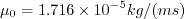
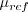

|
Langley Research CenterTurbulence Modeling Resource |
Return to: Turbulence Modeling Resource Home Page
VERIF/2DMEA: 2D Multielement Airfoil Verification Case - Intro Page
The purpose here is to provide a large sequence of unstructured grids
of ostensibly the same family,
along with results from existing CFD codes that employ specific forms of particular turbulence
models, in order to help programmers verify their implementations of these same models.
On a given grid, there may be differences between the results from different codes, but presumably
as the grid is refined the results should approach the same answer (if the flow conditions and
boundary conditions are the same).
With verification, the purpose is not to establish the "goodness" of a model compared to experiment,
but rather to establish that a model has been implemented correctly, as intended according to the
equations and boundary conditions. (It is through validation that a model's "goodness" is
established.) The purpose here is primarily verification.
The 2-D multielement airfoil case involves flow over a 3-element airfoil.
This airfoil is derived from a section of the NASA CRM-HL configuration.
It is a "kink cut" from the 3-D configuration (perpendicular to the leading edge up to 25% chord, then chordwise going aft),
with the chordwise part located at Y=640 inches of the full-scale NASA CRM-HL configuration.
The "kink cut" provides a more representative flow when using a 2-D section of a swept wing. Note that the "kink"
region included some blending to make it curvature continuous.
This 2-D section was used in
a Mesh Effects for CFD Solutions
special session at AIAA Aviation 2020, sponsored by the GMGW committee.
There is no experimental data for this case, but the main purpose here (for verification) is
NOT comparison with experiment.
This verification case was run fully turbulent at
angle of attack of 16 degrees, M = 0.2, and a Reynolds number of Re = 5 million based on stowed
airfoil chord length.
The outer boundary of the grid in this case is about 1000c from the airfoil, where farfield Riemann boundary
conditions are imposed. Two AIAA papers from this special session - AIAA-2020-3219,
https://doi.org/10.2514/6.2020-3219 and AIAA-2020-3220,
https://doi.org/10.2514/6.2020-3220 - used
adaptive gridding and higher-order accuracy to achieve grid-converged solutions when using the
SA-neg turbulence model.
(Note that later verifications were made in AIAA-2021-1080,
https://doi.org/10.2514/6.2021-1080.)
In these papers, the entire polar was run (many angles of attack). Here,
however, the focus is only on the single angle of attack of 16 deg.
The case should be run with a compressible CFD code that solves the full Navier-Stokes equations.
See details on the page: Implementing Turbulence Models into the Compressible RANS Equations.
The Prandtl number Pr is taken to be constant at 0.72, and turbulent Prandtl
number Prt is taken to be constant at 0.9.
The heat capacity ratio ( where
,
where

is the reference dynamic viscosity that corresponds to the freestream in this case, and
freestream Another important note: although M=0.2 is low enough that the flow in many regions is "essentially" incompressible,
this is a compressible flow verification case. In fact, at this angle of attack, the local
Mach number over the slat exceeds M=0.8. Therefore, if you run this case with an incompressible
code, your results will likely be inconsistent with the compressible results as the grid is refined.
What to Expect:
*SA-neg should yield essentially identical results to SA, and SA-neg-RC should yield essentially identical results to SA-RC.
(Other turbulence model results may be added in the future.)
Return to: Turbulence Modeling Resource Home Page
Responsible NASA Official:
Ethan Vogel  ) is 1.4.
The dynamic viscosity is computed using
Sutherland's Law (See White, F. M., "Viscous Fluid Flow," McGraw Hill, New York, 1974, p. 28).
In Sutherland's Law, the local value of dynamic viscosity is determined by plugging the local value of temperature
(T) into the following formula:
) is 1.4.
The dynamic viscosity is computed using
Sutherland's Law (See White, F. M., "Viscous Fluid Flow," McGraw Hill, New York, 1974, p. 28).
In Sutherland's Law, the local value of dynamic viscosity is determined by plugging the local value of temperature
(T) into the following formula:

 , and
, and
 .
The same formula can be found online
(with temperature constants given in degrees K and some small conversion differences).
Note that in terms of the reference quantities for this particular case, Sutherland's Law can equivalently be written:
.
The same formula can be found online
(with temperature constants given in degrees K and some small conversion differences).
Note that in terms of the reference quantities for this particular case, Sutherland's Law can equivalently be written:

 is is defined in the figure below. This latter form may be more convenient for nondimensional codes.
(Specific details regarding an implementation of Sutherland's Law in nondimensional codes can be found in
handwritten notes describing Sutherland's Law in CFL3D and FUN3D.)
is is defined in the figure below. This latter form may be more convenient for nondimensional codes.
(Specific details regarding an implementation of Sutherland's Law in nondimensional codes can be found in
handwritten notes describing Sutherland's Law in CFL3D and FUN3D.)
RESULTS
LINK TO EQUATIONS
MRR Level
SA-neg*
SA-neg eqns
4
SA-neg-RC*
SA-neg-RC eqns
3
Page Curator:
Clark Pederson
Last Updated: 11/08/2021